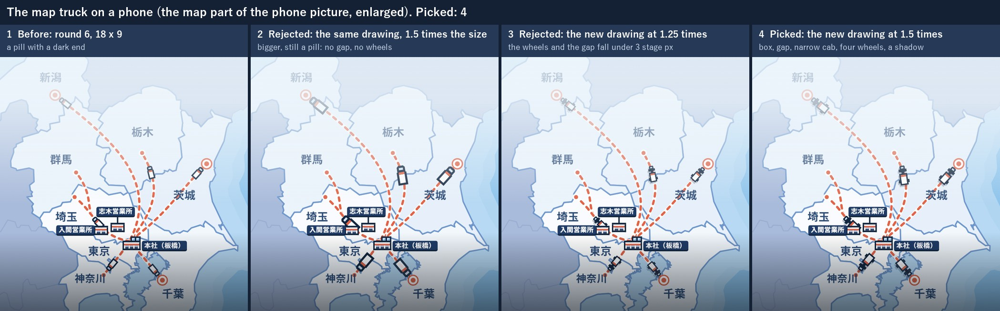
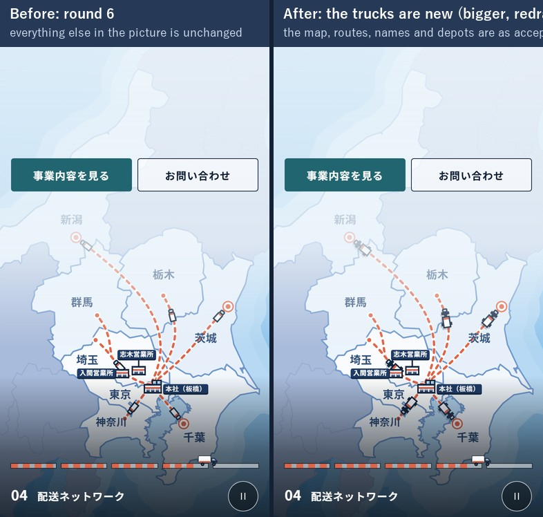
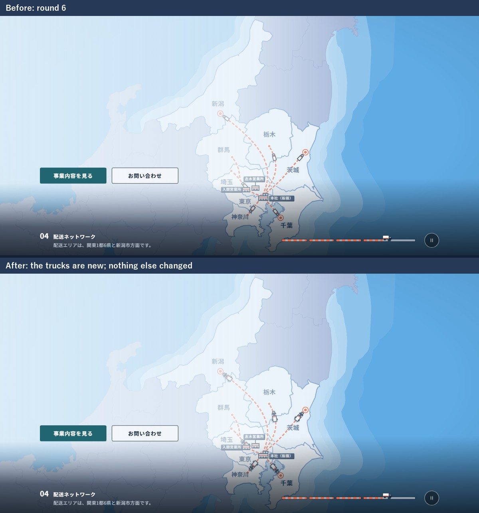
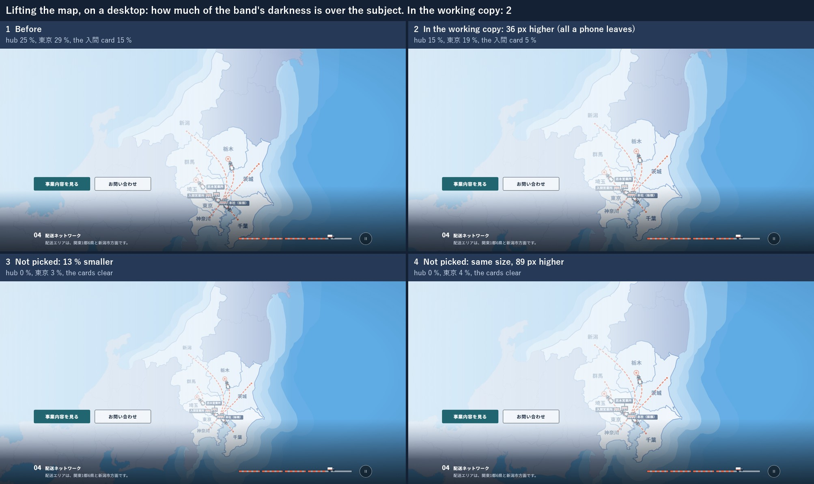
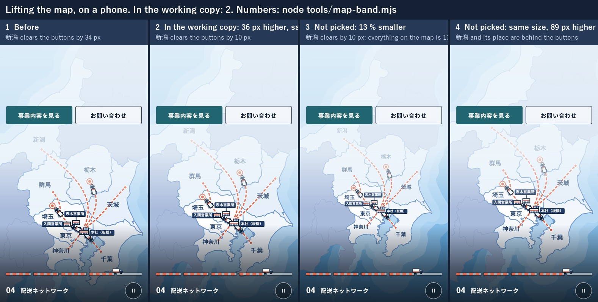
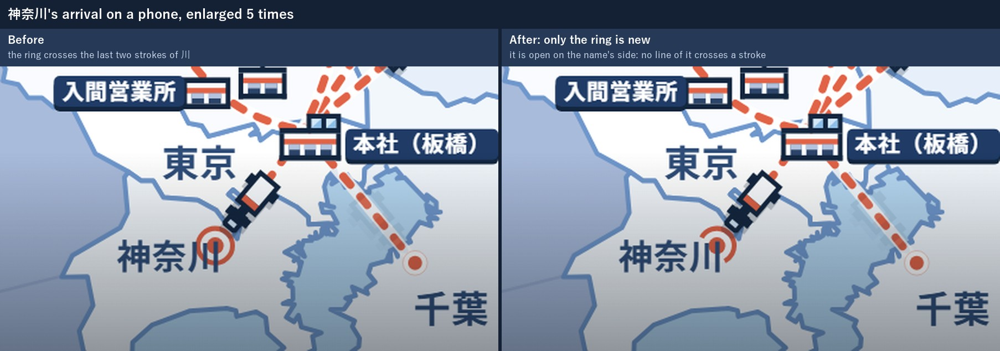
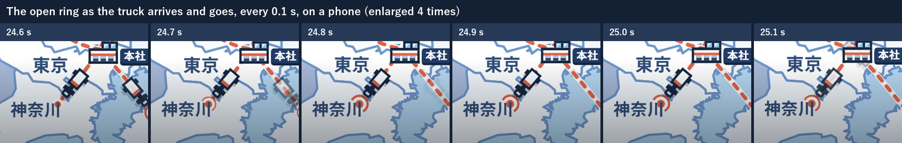
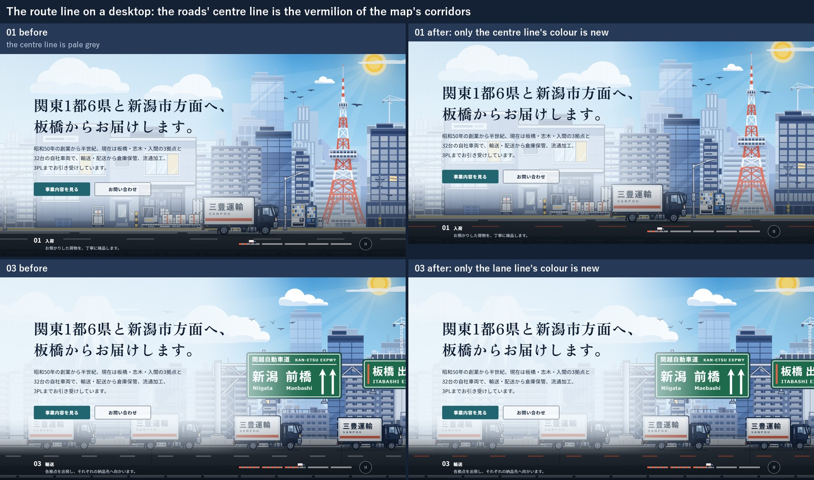
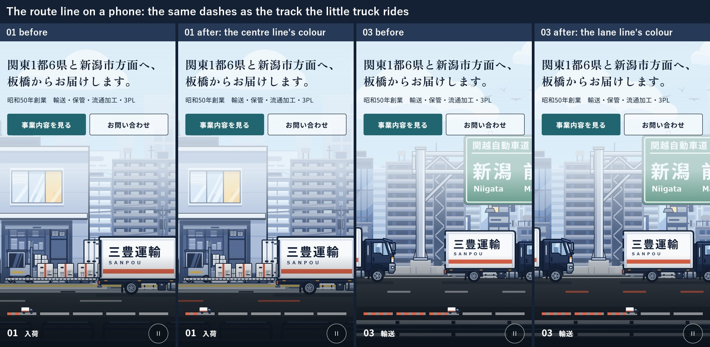

三豊運輸 hero remake: round 7
Newer work: three fixes on this round (the map's place, the map truck, the truck on the progress bar) are on their own page.
Two parts, shown together. Part 1 is the four corrections on round 6. Part 2 is the half of the brief that had not been touched: every scene change as one camera move, soft landings, nothing that pops, a route line through the film, and the cost. Stills cannot show motion, so part 2 is clips, each recorded frame by frame at 60 frames a second, at the desktop framing and at a 390 px phone. The owner's timings, dwells and camera paths are untouched.
Earlier: round 6, the batch and the four fixes.
1a. The map truck reads as a truck
The steering stays. The drawing was 18 x 9 map units, about 18 x 9 px on a phone, and read as a pill with a dark end. It is 27 units long now: a white box in one navy outline with the vermilion stripe, a gap with the chassis in it, a navy cab narrower than the box with the windscreen at its nose, four tyres standing out at the sides, and a flat shadow that keeps its place on the map while the truck turns over it. Nothing is under 3 stage px.



1b. The map and the desktop band: a trade for you to decide
On a desktop the site lays a dark band over the foot of the hero, from stage y 713 down, and the hub, the name cards and 東京 stood in it. The map now stands 36 px higher. That is all a phone leaves: there the name 新潟 comes up under the two buttons, and it now clears them by 10 px (it was 34). It takes the darkness over the hub from 25 % to 15 %. It does not clear the band. Clearing it takes 89 px, and a phone has 46.
| The band's darkness over | Before | Now: 36 px higher | 13 % smaller | 89 px higher |
|---|---|---|---|---|
| the hub (head office) | 25 % | 15 % | 0 % | 0 % |
| the name 東京 | 29 % | 19 % | 3 % | 4 % |
| the 入間営業所 card | 15 % | 5 % | 0 % | 0 % |
| 新潟 below the phone's buttons | 34 px | 10 px | 10 px | behind them |


Seen on the desktop frames and not ours to change: the site's pale wash under the copy column reaches as far as the hub at about half strength, so on a desktop the cards are washed as well as banded.
1c. No power lines across Tokyo Tower
While scene 01 holds, the Tower stands behind one span of the utility poles: three lines and the cable crossed its legs. That span carries no lines now: they end at one pole and start again at the next. During the pan the next span reaches the Tower only after the warehouse has covered it.
1d. 神奈川's ring no longer crosses 川
The dot's place and the name's place are both closed, so it is solved in the ring: it is open on the name's side, running from ten o'clock round by the top and the right to five o'clock, the side its truck arrives on. No line of it crosses a stroke. Every other place keeps its whole ring.


2. Every scene change is one camera move
Each clip plays the working copy as the site would, on the site's own clock. Press play; they loop.
02 → 03: the camera goes with the trucks
Before, a half-second dissolve between two still cameras. Now the camera goes after the departing trucks along the road, slowly and then fast, the street gives way to the expressway at its fastest moment (0.17 s), and it lands over 1.25 s riding with the convoy. The trucks on the expressway are simply ahead on the road until the camera catches them up; none fades in.
03 → 04: the camera rises off the road to the map
Before, a 0.85 s dissolve onto a frozen frame. Now the expressway, still running, goes down out of the frame and the map comes down into it from above, as one picture passing the window (0.94 s).
01 → 02 and 04 → 05: the two moves that were already moves
Same frames, same distances. They used to ease evenly in and out; now they start a little quicker and land longer and softer. In 04 → 05 the finale is no longer faded in as a group: it stands finished under the map and is seen as the map goes.
Every scene, start to end
What is new in each is the motion listed above and the route line; the drawings are the accepted ones, with the four corrections.
Never frozen, and weight where a truck moves: checked, nothing added
Both were already there from the earlier rounds, so I measured rather than added. In every hold something moves on every step (the motion check finds no frozen step anywhere in the film):
- 01 clouds, birds, the light shafts, the Tower's beacon, a crane, the supplier's forklift, the truck's idle and exhaust.
- 02 the warehouse forklift, three trucks' idle and exhaust, clouds, birds.
- 03 everything: the camera is riding.
- 04 the water off both coasts, the corridors' dashes, the trucks and their arrivals.
- 05 the plane's 26 s cycle, the road and depot trucks, the airport's windsock, radar, tower lamp and baggage train, the beacon, cranes, lit windows, clouds, birds.
Every truck that starts or stops squats and settles through the same weight model (scene 01's arrival, the move to the dock, the three departures, the depot's trucks in the finale); both forklifts pitch on their own acceleration; the map trucks start softly and land longer.
One route line through the film
The centre dashes of the street, the lane dashes of the expressway and the centre dashes of the finale's road are now the vermilion of the map's corridors: same dashes, same places, nothing added. With the seven corridors and the dashed track the little truck rides on the site, it is one dashed line from the first scene to the last. It lies under the site's dark band, so it is quiet: brick red on a desktop, clearer on a phone, where it runs just above the track. It has its own commit and can be dropped alone.


The cost: the remake now plays smoother than the original
You were right that cheaper code was the wrong place to look. A trace of scene 02 on the slowed phone showed where the time went: the remake's script was faster than the original's and its main thread about level, but the browser was drawing the whole scene again on every frame: 13.6 ms a frame of drawing work against the original's 0.4 ms. Everything shared one layer, so a cloud, a lit window or a truck's idle anywhere made all of it be drawn again, and merging rectangles into a few large paths to save nodes had made that drawing dear. That is why fewer nodes had not made it smoother.
- A group marked
data-cachenow has a layer of its own: drawn once, then only moved. Drawing work 13.6 → 1.3 ms a frame. - Drawings that are built once are not walked again by the script. Script 5.6 → 4.2 ms.
- A single shape's opacity is written in a way the browser needs no separate effect for (scenes 01 and 02 had 150 such shapes, lit windows mostly).
- Scenes 01 and 02 are a stack of pictures instead of one: the rows of the city are still pictures, moved by the camera as layers.
- 56 circles that were never seen are gone from scenes 04 and 05.
The picture is the same: against the working copy before this, 0.08 % of pixels differ on the stage and 0.10 % on a phone, all at the edges of layers.
| The finished film, phone @2x, CPU 4x slower, one sitting, two runs each, one side after the other | Original | Remake |
|---|---|---|
| Frames a second | 73.0 / 73.4 | 81.8 / 79.3 |
| Frame time, median | 13.1 / 13.2 ms | 11.7 / 12.1 ms |
| Frames over 16.7 ms | 8.5 / 7.6 % | 3.0 / 3.6 % |
| Frames over 33 ms | 1.1 / 1.0 % | 0.3 / 0.3 % |
| Script (drawing) per frame, mean | 5.98 / 5.97 ms | 4.06 / 4.24 ms |
Before the cost work the remake stood at 50 to 54 frames a second with 43 to 54 % of frames over 16.7 ms, against an original at 72 to 73 and 8 to 9 %. The longest single frame is 97 to 99 ms for the remake and 119 to 134 ms for the original.
| Scene by scene, same run, median of two | Original: median, over 16.7 ms | Remake: median, over 16.7 ms |
|---|---|---|
| 01 | 14.0 ms, 2.8 % | 12.9 ms, 2.0 % |
| 02 | 13.1 ms, 22.4 % | 13.8 ms, 3.6 % |
| 03 | 14.8 ms, 19.0 % | 12.4 ms, 4.7 % |
| 04 | 14.3 ms, 15.2 % | 11.5 ms, 9.2 % |
| 05 | 13.4 ms, 3.2 % | 11.4 ms, 2.0 % |
| Nodes on the stage | Original | Before round 7 | Now |
|---|---|---|---|
| 01 | 1337 | 1472 | 1484 |
| 02 | 1372 | 1483 | 1495 |
| 03 | 1254 | 944 | 944 |
| 04 | 778 | 1017 | 946 |
| 05 | 777 | 1016 | 945 |
Scenes 01 and 02 have 12 more nodes than before the round: the wrappers of the picture stack. Scene 03 has as many as before; scenes 04 and 05 have 71 fewer.
Checks on the finished film
- The original files are intact (7 of 7 checksums) and the website folder is untouched.
- check-viewer: 0 console errors; determinism, the real player, rapid clicks and reduced motion pass.
- check-seams (new): the site's real player plays both moves, at both framings, and by click.
- motion-check, all five scenes (to 49.5 s, 60 steps a second): 0 frozen steps and 0 pops in every scene. The two old pops (14.6 s and 28.7 s) are gone, and so are the two frozen steps scene 04 used to begin with.
- contrast-check: all 13 copy rows pass at both framings; the unfilled track fails as on the original.
- cloud-check: no cloud below a roof.
For you to decide
- The map and the desktop band (1b): stay at 36 px, make the map 13 % smaller, or let 新潟 go behind the phone's buttons.
- The route line: vermilion on the roads is a new use of the route's colour outside the map. It is one commit and can be dropped.
- 02 → 03: the camera overtakes the three trucks and finds four on the expressway. I read it as "the convoy", not as the same three trucks.
- 03 → 04: the edge between the sky and the map's sea crosses the frame for about a tenth of a second at the move's fastest moment.
- Layers: the still drawings now each hold their own layer in the browser's memory (about 25 to 30 in scenes 01 and 02). It measures better here, which is Chrome with a slowed processor standing in for a phone. It has not been run on a real low-end phone, and not in Safari on an iPhone: Safari may not give a drawing inside the picture its own layer, in which case it gains less there (the rows of the city, which are separate pictures, keep theirs). Nothing gets worse than it was; how much better is only measured in Chrome.
- Scene 03's caption still says 関東一円. Untouched: the owner's call.